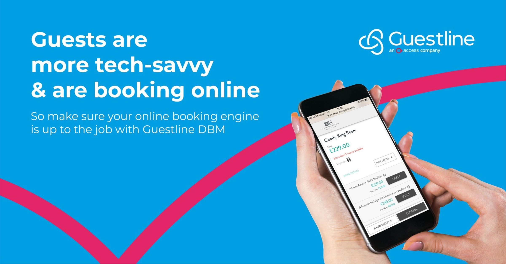
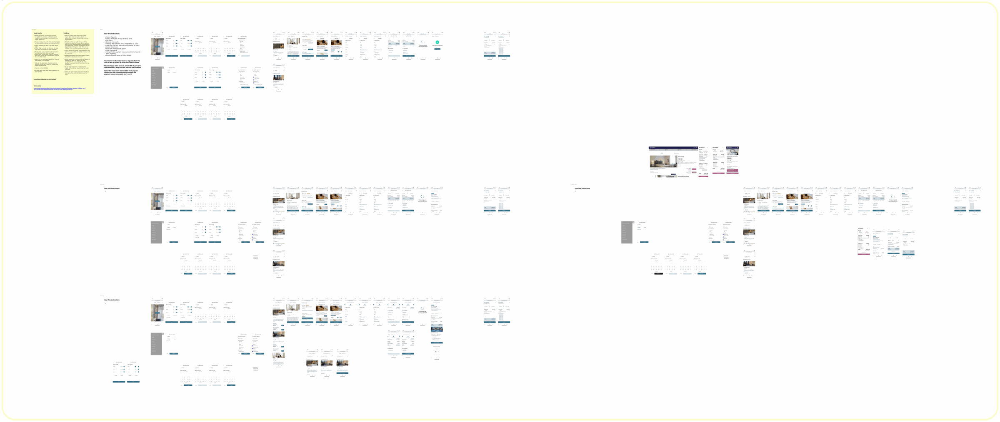
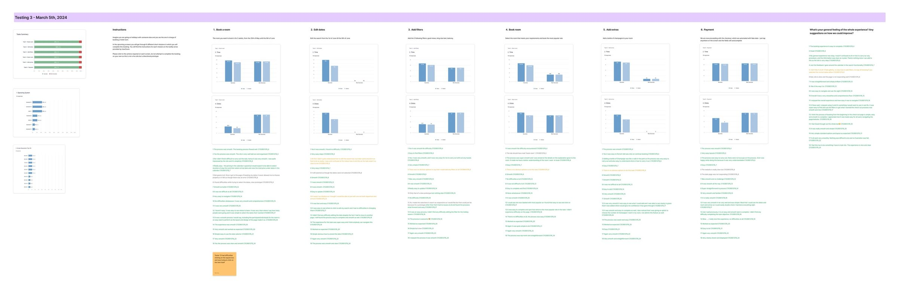
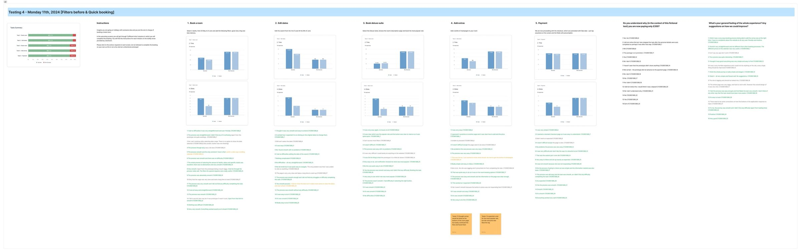

Direct Booking Manager
Renovar un motor de reservas muy usado pero anticuado para que parezca parte de la marca de cada hotel, funcione en móvil y envíe datos limpios del huésped al resto del ecosistema.

De un vistazo
El problema
Un motor de reservas muy usado que se veía anticuado, perdía huéspedes en móvil y no encajaba con el resto del ecosistema.
Mi rol
Única diseñadora de producto: análisis de funnel y abandono, tests de base y de iteración, y modernización de la UI sobre el sistema de diseño compartido. Con un PM, un dev lead y 6 ingenieros.
Impacto
Tareas de reserva un 25% más rápidas, un 20% menos de abandonos aprox. y una subida de conversión del 10 al 20%.
Habilidades
Herramientas
Maze, Hotjar
Resultados
25%
más rápido completando una reserva
~20%
menos abandonos, sobre todo en móvil
10 a 20%
más conversión en reservas
15%
más confianza de los usuarios
Contexto
El Direct Booking Manager es el motor de reservas que los hoteles integran en su propia web. Funcionaba y se usaba mucho, pero se veía anticuado y desconectado del nuevo Guest Portal y el Kiosco.
Además, importa más de lo que parece. A diferencia de las OTAs, las reservas directas captan el email real del huésped, y eso es lo que hace posible después el pre-check-in, las ventas adicionales y las facturas. Así que el encargo era elevarlo, no reconstruirlo.

Qué descubrí
De entrevistas con hoteleros y una comparación con las OTAs:
- Los huéspedes esperan una experiencia mobile-first, porque es lo que les dan las OTAs.
- Los hoteleros quieren que el motor de reservas parezca parte de su propia web.
- Los precios y las políticas tenían que ser mucho más claros para generar confianza.
Qué hice
Modernicé la interfaz sobre el Guest Design System compartido, con los mismos principios que el Kiosco y el Portal: claridad, autonomía, accesibilidad, adaptación a la marca y diseño responsive. Los hoteles pueden definir sus colores, tipografías y radio de esquinas sin romper la usabilidad.
Testeé antes y después. Primero una base: análisis de funnel, dispositivos y abandono, tests en Maze y Hotjar, que mostraron fricción en móvil y dudas con los precios. Después, tests en Maze de los flujos rediseñados para validar cada iteración.



Resultados
- Los participantes completaron las reservas un 25% más rápido
- Un 15% más de confianza declarada
- Un 20% menos de abandonos aprox. en Hotjar, sobre todo en móvil
- La conversión de reservas subió del 10 al 20%, frente a una referencia del sector del 5 al 15%
El despliegue aún estaba en marcha cuando Guestline fue adquirida, así que por ahora el producto en vivo mezcla lo antiguo y lo nuevo.
Siguiente proyecto
GuestStay Portal →